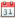

Verlängerung der Gültigkeit des Votums¶
Reiter Allgemeine Angaben¶
Geben Sie hier alle gesicherten, relevanten Ergebnissse an, um eine Verlängerung des Votums zu beantragen.
Wählen Sie mit einem Klick aus der Dropdown-Liste Studien jene Studie, die diese Meldung betrifft. Nach der Auswahl erscheint eine Tabellenzeile mit allgemeinen Angaben zur betreffenden Studie sowie ein Link, um bei Bedarf zur Leseansicht der Studie zu gelangen. Tragen Sie in weiterer Folge Ihre Ergebnisse und Schlussfolgerungen in das dafür vorgesehene Eingabefeld ein. Bei diesem Eingabefeld handelt es sich um ein Autogrowing Field (Lesen Sie mehr zum Autogrowing Field in der Hilfe-Seite Tools/Features).
Allgemeine Hinweise¶
- Nutzen Sie den Speichern-Knopf für Zwischenspeicherungen.
- Das mit einem roten Sternchen gekennzeichnete Feld ist verpflichtend.
- Das System weist Sie auf nicht-ausgefüllte Pflichtfelder hin, wenn Sie auf Einreichen klicken. Beachten Sie, dass eine Meldung, die nicht durch den Einreichen-Knopf bestätigt wurde, nicht bearbeitet werden kann.
Reiter Studien-Status¶
Geben Sie den Zwischenstatus der Studie an.
Allgemeine Hinweise¶
- Nutzen Sie den Speichern-Knopf für Zwischenspeicherungen.
- Die mit einem roten Sternchen gekennzeichneten Felder sind verpflichtend.
- Nutzen Sie , um Wochentag und Monat auszuwählen.
- Das System weist Sie auf nicht-ausgefüllte Pflichtfelder hin, wenn Sie auf Einreichen klicken. Beachten Sie, dass eine Meldung, die nicht durch den Einreichen-Knopf bestätigt wurde, nicht bearbeitet werden kann.
Reiter Unterlagen¶
Hier können Unterlagen, die mit der Meldung korrespondieren, hochgeladen werden.
Durchsuchen Sie Ihre Dateien nach den Unterlagen und laden Sie sie hoch.
Allgemeine Hinweise¶
- Hinweise zum Einreichen von Unterlagen finden Sie in der Hilfe-Seite Reiter Unterlagen.
- Nutzen Sie den Speichern-Knopf für Zwischenspeicherungen.
- Die mit einem roten Sternchen gekennzeichneten Felder sind verpflichtend.
- Nutzen Sie , um Wochentag und Monat auszuwählen.
- Das System weist Sie auf nicht-ausgefüllte Pflichtfelder hin, wenn Sie auf Einreichen klicken. Beachten Sie, dass eine Meldung, die nicht durch den Einreichen-Knopf bestätigt wurde, nicht bearbeitet werden kann.